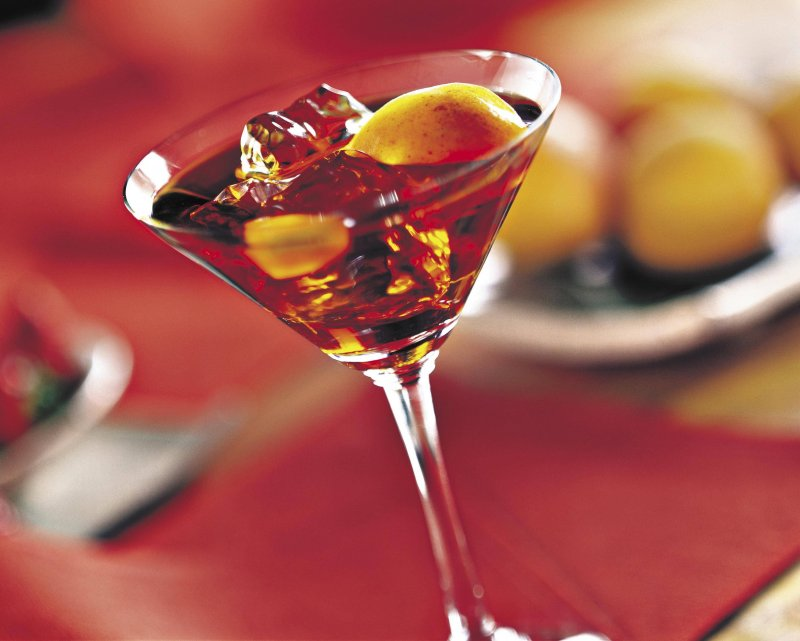

У Франції прийом гостей майже завжди починається з аперитиву. Це важливий мультифункціональний
ритуал, який триває щонайменше пів години. Під час аперитиву можна познайомити гостей, обмінятися
новинами в менш формальній обстановці, а також зачекати на тих, хто запізнюється. Відтак, переходячи
до столу, всі присутні почуватимуться комфортно, і вечір пройде у приємній атмосфері. Аперитив
зручний і тим, що, поки гості зайняті спілкуванням, господиня може подати закуски або підігріти
головну страву.
Щоб зробити вечір динамічнішим, рекомендую сервірувати аперитив не за обіднім столом, а в якійсь
іншій житловій зоні. Наприклад, на журнальному столику у вітальні, біля барної стійки, якщо така є,
а влітку — на терасі чи балконі.

На аперитив зазвичай подають невеличкі закуски, що не потребують особливих зусиль у приготуванні. Це
можуть бути оливки, горіхи, чіпси, крекери з різними намазками, на зразок тапенаду або паштету,
маленькі салямі, нарізані сирі овочі з соусами. А якщо у вас є час на приготування домашніх закусок
— чудово! Тільки важливо розрахувати їхню кількість, щоб лише розігріти апетит гостей, а не перебити
його.
Коли я запрошую додому гостей, люблю купувати на аперитив незвичайні якісні продукти. Наприклад,
салямі з трюфелем, мариновані у спеціях маслини, італійські тараллі з розмарином. А коли маю зайві
15 хвилин перед приходом гостей, то готую гарячі канапе з козячим сиром та медом. Вони завжди
розлітаються за секунди!
У якості напоїв на аперитив можна подати: шампанське, біле або рожеве вино, пастіс (анісову горілку)
з водою, шприц, кір руаяль та інші легкі коктейлі. Якщо серед гостей будуть присутні ті, хто не
споживає алкоголь, або діти, важливо подбати про напої і для них.
І остання порада: організовуючи аперитив, пам'ятайте, що головна мета цього ритуалу — спілкування, а
не їжа. Не варто мудрувати над закусками. Ваші кулінарні здібності вийдуть на перший план під час
обіду чи вечері. До речі, про те, як скласти справжнє меню по-французьки, я розкажу окремо. І ось
мій улюблений рецепт на аперитив.